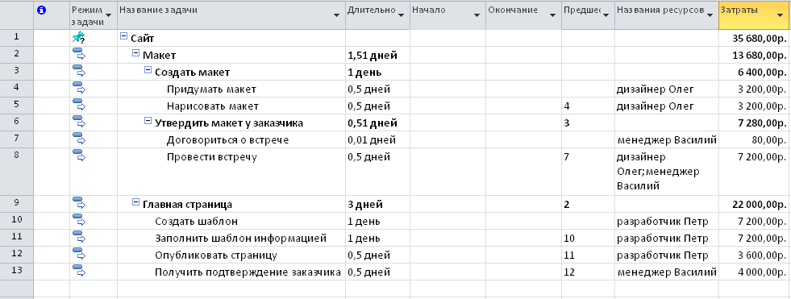

Управление ИТ-проектом • Глава 8
Сроки: Математика прогнозов
Главная беда ИТ — «оптимизм разработчика». Мы учимся считать сроки так, чтобы попадать в них в 90% случаев.
1. Оценка по трем точкам (PERT515)
Если задача уникальна и вы не знаете точно, сколько она займет — используйте PERT687. Это взвешенное среднее, которое «наказывает» за излишний оптимизм.
Среднеожидаемая длительность (EAD). Обратите внимание на вес «вероятной» оценки — он в 4 раза выше.
2. Критический путь (CPM)
Проект заканчивается тогда, когда закончена самая длинная цепочка задач. Это и есть Критический Путь.
| Тип задачи | Свойства | Действие ПМ-а |
|---|---|---|
| На КП | Резерв времени = 0. Любая задержка = задержка всего проекта. | Жесткий контроль, приоритет ресурсов. |
| Вне КП | Есть «люфт» (float). Можно задержать без вреда для дедлайна. | Источник ресурсов для задач на КП. |
3. Диаграмма Ганта

Пример из книги: визуализация зависимостей и критического пути.
Закон Селиховкина: ПМ управляет не задачами, а «запасом прочности» на критическом пути.